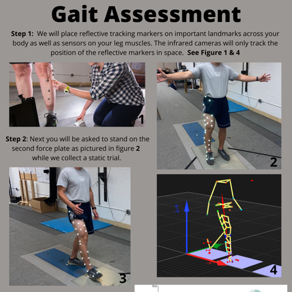

< Back to Research Portfoilo
< Back to Research Portfoilo
Understanding Fatigue in Older Adults
National Institute of Health Research Project Grant (R01)

Project and abstracts I have worked on related to this research grant
Knee Extensor Functional Demand with Aging
2023 American Society of Biomechanics Abstract
Aging is associated with declines to the neuromuscular system that impact our ability to ambulate. Specifically, the knee extensor muscle group has been shown to have worsened functionality in older adults compared to younger adults. In this abstract, we investigated whether knee extensor functional demand, a measurement that quantifies the total demand placed on muscles during walking, is different between younger and older adults. We also quantified other structural and functional characteristics of the knee extensors such as percent fat fraction, maximum voluntary isometric contractions, and specific torque. We found that knee extensor functional demand increases when walking speed increases, but did not find an effect of aging. Notably, our older adults were more physically active than our younger adults, suggesting that physical activity may also impact function with aging.
Figure 1: Knee extensor functional demand at the first peak knee flexion moment (A) and second peak knee extension moment (B). The table in part C shows characteristics of the participants including fat fraction, max voluntary isometric contraction torque, specific torque, and physical activity level.
Click the link below to view my abstract:
Aging Related Changes in Postural Control
2022 North American Congress of Biomechanics Abstract
Aging is associated with declines in performance such as reduced postural control. In clinical settings, postural control is assessed by measuring how long a person can stand in a certain position. However, only recording time may not fully explain if and how posturral control is altered. In this abstract, I investigated aging and fatigue related adaptations in postural control in four different balance positions. I used time to contact, a measurement that quantifies the amount of time someone has to make a postural correction to prevent a fall, to quantify postural control. Time to contact requires understanding where the position of the feet are in relationship with the center of pressure, which can be quantified using optical motion capture and force plates. The results show that although older adults are able to balance in various positions for the same amount of time as younger adults, time to contact is significantly lower. Reduced TTC in the older adults reveals diminished postural control in the spatio-temporal domain in all 3 stances, suggesting an increased risk of falls due to perturbations compared with younger adults.
Figure 1: Trajectory plots of TTC (top) for the three stances included in the analysis. Minimum TTC (in seconds) for pre and post 30MTW (bottom). There was a main effect of age for the SBS (p<0.05), ST (p<0.01) and FT (p<0.01) stances.
Click the link below to view my abstract that was accepted to this conference for an oral presentation:
We are currently writing a manuscript about aging related declines in postural control using time to contact, focussing on how this measurement changes right before someone alters their posture to prevent a fall
< Back to Research Portfoilo